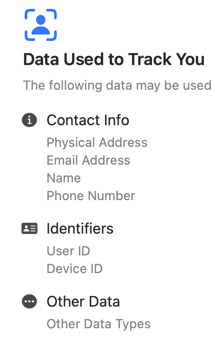

Predicting Biodiversity by Change in Forest Mass
Introduction
Content for the introduction section.
Data
Content for the data section.
Methods
Content for the methods section.
Limitations
Content for the limitations section.
Discussion
Content for the discussion section.

Privacy Terms Final Project Proposal
Group Members:
Ishika Keswani @cr-ishika Group Role: Task Manager. Ishika is the brains of this proposal, as the proposed project is a spinoff from her 10-week SURP project which she presented a poster on. Therefore, she will be responsible for delegating tasks based on both our’s relative expertise.
Project Role: Ishika conducted many user studies, and is familiar with common pain points and main misunderstood terms in both IOS and Android Privacy Labels. Ishika will be the mainly responsible person for creating a simplified version of the super complex Privacy Terms. Ishika’s insight and intuition will come in super handy for this task. Ishika will also be responsible for leading the web-scraping/online data processing process.
Ulas Ayyilmaz Group Role: Project Manager: Ulas will be on top of each meeting scheduling, as well as checking if goals are met, upholding a clear structure to achieve the end product in the desired time. Project Role: Ulas will be responsible for building the backend as well as the front end of an extension that will allow the feature of hovering your mouse on a term and seeing it’s simplified version. Ulas will also contribute to webscraping. Ulas and Ishika will code both “What percent of similar apps found on google play store” feature, as well as the role of demographic background of an individual on their understanding of the terms (data collected by Ishika’s research group.
TITLE: Understanding User Privacy in Android Devices Broad Topic: Exploring terms found in Android Privacy ‘Nutrition Labels’ and creating an interface/website/app wherein users could input an android app store link (no privacy issues with android which makes web-scraping a much easier process J) and have as an output a simplified version of the terms and whether they are collected or shared, and what percentage of ‘similar apps’ found on the google play store collect/share each particular variable type. Additionally, if time permits, we could include a feature wherein hovering the cursor over a term would lead to a small projection on the screen containing a simplified explanation/definition of the term to increase accessibility of this information and negate the need to go to a whole different page or look up the definition.
Data & Variables & End Product: Taking inspiration from the New York Times tree in the Decision Trees topic notes on the website, I thought it would be interesting to create a scrollytelling graphic/image of a similar tree which could explore:
How demographics impact which terms from the android list of terms are more or less widely understood (information available via the full study we conducted as surveyed individuals were required to report their demographics) or how demographics determine whether an individual would get the definition of a term correct, partially correct, wrong, restate the term, or say they don’t know the answer.
We divided the terms into categories based on the results of a follow up study we conducted wherein users were given the definition/meaning of a term in colloquial language and were asked to suggest phrases/term names for each of them such that it would be easiest to understand. The categories were 1) Terms whose diction needed to be clarified, 2) Terms that were too broad or needed to be split up into multiple smaller terms, 3) Terms including the word ‘other’, 4) Terms with no good alternatives, 5) Terms lacking nuance. We could also see how correctness of the term differed across these categories and whether we could use correctness and user demographics to predict which category a term would fall under. Another use of data in this project could link back to the segment about the ‘similar apps’ on the app store. We could also use graphics and other available data (such as number of downloads of an app, rating of an app, number of apps with the same function, etc.) to determine whether we can create a model - possibly integrating methods that our out of the scope of Compstats such as deep NNs - to predict if an app collects/shares more or less data than other similar apps which perform the same function.
Update
- Have you already collected, or do you have access to, all of the data that you will need in order to complete your project? If not, please estimate the percentage of the data that you have, describe any issues that you are having, and what your plan is for getting the rest of the data.
We have three big datasets that we will draw our data from. i. Our first dataset is a dataset of 300+ users for each row, and all “misunderstood” terms as all columns - the misunderstood terms were designated after a pilot study conducted by Ishika Keswani during the summer where a group of people explained what they understood from all Android app terms, and Ishika’s lab group classified all the terms according to if they have been “misunderstood” based on some critera by more than 67% (2/3) of the people.This dataset lists if the main experiment participants of 300+ people understand the “misunderstood” terms, so each cell is “correct”, “wrong”, “partially correct”, “I don’t know”, or a restate”. ii. Our second dataset is a massiv edataset consisting of 100,000+ json files, each listing information for a single application. We have two datasets, one for IOS, and the other for Android. Eachjson file lists app information, including various charasteristic labels of the app, that specific if a particular data is collected (user, location, activity time…) relating to terms. We will use this information to calculate what data is collected in what percent of all the apps, and can create vizualizations about what are the most misunderstood terms whose respective data is collected by most apps. iii. LAst dataset is a excel dataset with people telling how they would rephrase the misunderstood terms, for each term.
We also know how to se Play Store API to webscrape from all apps from playstore if need be, to calculate similarities or any other metric.
- What is the single biggest unresolved issue you are having? Please describe it briefly, and what your plan is for resolving this issue.
- Learning backend of scrollytelling.
- We still need to learn to code the part that takes in a URL of a google play store app, and is able to scrape the labels as a json file, immediately generating statistics and respective visualizations.
- What are the elements from outside of the course, if any, that you plan to incorporate into your project?
- Webscaping from google play store applications into json files
- Buidling a webpage using HTML, CSS, javascript
- Scrollytelling
- Training a ML algorithm (ie Deep NEural NEtwork) for some purpose. (we are uncertain as of now).
Updates on work: 1- Realized that the requests from the api returned NULL. This might be because some countries in specified years don’t have specific bird data. Testing hypothesis now. 2- Found that bird_data<-name_suggest(q = “Aves”, rank = “class”) most of the time threw a timeout error. Fixed the error by increasing timeout: bird_data<-name_suggest(q = “Aves”, rank = “class”, curlopts = list(timeout = 60)) 3- Saw that calling for key column of the bird_data always returned Null. Changed bird_data\(key -> bird_data\)data$key. Works! Tax_key of bird “aves” is 212.
4- couldn’t figure out a way to mass download all data - probably because the size is too large. Pivoted to using specific bird species and downloading from the website one by one. Found bird species that majorly live in forests, wetlands, and shrublands. Comparing their predictability.
5- merged all bird datasets into all_bird_orders_data.csv
Birds: Forest: Coraciiformes (623,438): Strigiformes (420,677): Owls. Often found in forests and woodlands.
Ground-shrubland Galliformes (680,284): Chickens, turkeys, and quails. Found in grasslands, forests, and shrublands.
Wedlands Ciconiiformes (64,794): Storks. Found in wetlands and grasslands.
- I just figured out that entries belonging to year 2000 are significantly less then entries belonging to year 2020. So when I see an enourmous increase between 2000,2020, in a species, it doesn’t imply a major increase in animal’s population. In order to tackle this problem, first
- on the model_data, which is the grouped (country, year, order) summarize n() for count, I applied log function to order_counts, so that the increase from 2000 to 2010 is not as sharp, implying that the bird populations don’t increase exponentially: log_count variable
- on the log-scaled data called model_data_log, I normalized each log_count globally between 0-1.
Visualize SVM model performance
svm model only predicts the b3 class, which has the most observation(4) compared to other classes. knn predicts well for train dataset, not so well but still above average for test. random forest
- Scrollytelling used to work before, is not working anymore.